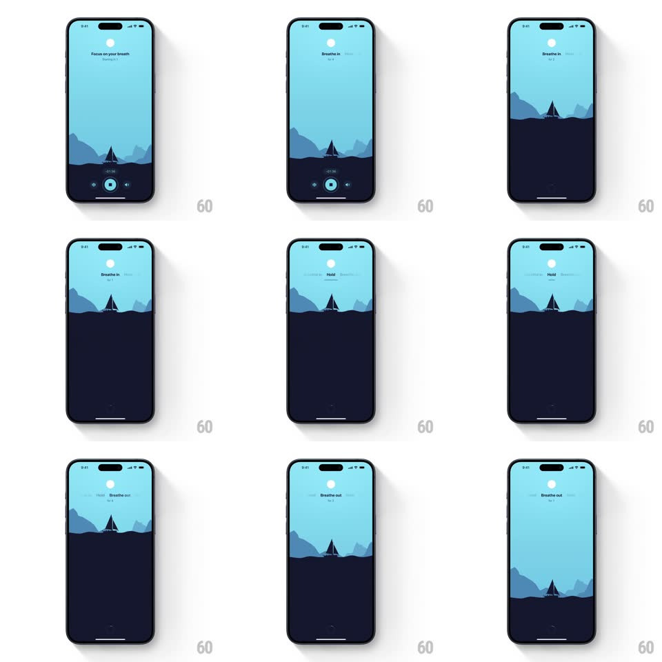

Media
Frame-by-frame

Rebuild this interaction 1:1: Unwind's breathing scene - a dark tide rises and falls against a night sky in sync with the breath cycle, a tiny sailboat bobbing on the waterline.

Rebuild this interaction 1:1: Unwind's breathing scene - a dark tide rises and falls against a night sky in sync with the breath cycle, a tiny sailboat bobbing on the waterline.
## Integration
Integration: stack-agnostic spec - springs given as stiffness/damping, timed motions as duration + curve; map every value to your framework and animation library of choice.
## Scene
A pale-blue night sky with a pale moon and "Focus on your breath" (session counter beneath). The lower third is a dark navy sea with a small sailboat silhouette. A control bar at the bottom holds the session timer, skip buttons, and a round play/pause. On phase change the prompt swaps to "Breathe in" / "Breathe out" with a countdown ("03s").
## Motion spec
Pattern: tide-synced breathing loop.
- Inhale (4s): the sea rises slowly (waterline up ~12% of screen height, ease-in-out matching breath pacing), the sky's hue deepening a touch; "Breathe in" fades in with the countdown ticking each second.
- Exhale (4s): the tide falls back, sky lightening; "Breathe out" replaces the prompt (crossfade 400ms).
- The waterline is a gentle wave curve, undulating continuously (two overlapping sine waves, +-6px, 3s and 4.7s periods) independent of the tide level.
- The sailboat rides the waterline: it rises and falls with the tide and bobs with the wave phase (translateY + roll +-2.5deg), always seated in the surface.
- The moon drifts almost imperceptibly (translateY +-4px over the full cycle); a faint glow halo breathes with the tide (opacity 0.5-0.8).
- Phase changes land with a soft chime and a very light haptic; the countdown digits crossfade (150ms).
## Calibration
- Two colors dominate: pale blue sky, navy sea; the moon, text, and boat are near-white/near-black silhouettes.
- The pace is the point: no motion faster than the breath; even taps answer with 300ms+ eases.
## Reduced motion
Waterline rises in steps per phase; boat bob and wave undulation removed.
## Don't miss
- The boat never leaves the waterline - it's the tether that makes the tide read as water, not a filling bar.
- Text sits high and tiny; the scene is the interface.